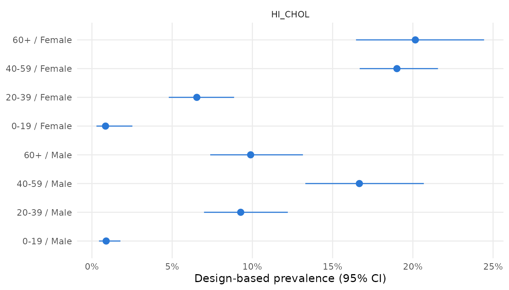

Real data: high cholesterol in NHANES 2009-2010
Sujon Mia - StatAid Research Lab
Source:vignettes/real-data-nhanes.Rmd
real-data-nhanes.RmdThis vignette applies SurveyNCD to real survey data: the extract of the US National Health and Nutrition Examination Survey (NHANES) 2009-2010 that ships with the survey package. It has 8,591 participants with the real design variables (masked strata and PSUs, examination weights) and one health indicator:
-
HI_CHOL: total cholesterol of 240 mg/dL or more, from a blood test.
It also includes age group, sex and race/ethnicity. The extract has
no self-reported conditions or wealth variable, so it cannot show the
multimorbidity or socioeconomic-inequality functions. Those are
demonstrated on simulated data in
vignette("full-workflow"). Here it shows the design
handling, group-wise prevalence, age standardisation and tables on a
real complex sample.
library(SurveyNCD)
library(survey)
#> Loading required package: grid
#> Loading required package: Matrix
#> Loading required package: survival
#>
#> Attaching package: 'survey'
#> The following object is masked from 'package:graphics':
#>
#> dotchart
data(nhanes, package = "survey")
nh <- transform(
nhanes,
sex = factor(RIAGENDR, 1:2, c("Male", "Female")),
race = factor(race, 1:4, c("Hispanic", "Non-Hispanic white",
"Non-Hispanic black", "Other")),
age_group = factor(agecat, levels(agecat), c("0-19", "20-39", "40-59", "60+"))
)
des <- svydesign(ids = ~SDMVPSU, strata = ~SDMVSTRA, weights = ~WTMEC2YR,
nest = TRUE, data = nh)Prevalence with design-based confidence intervals
HI_CHOL is missing for participants without a valid
blood test. These are excluded by domain estimation, so the design is
kept intact.
survey_prevalence(des, "HI_CHOL")
#> indicator n estimate se lower upper deff
#> 1 HI_CHOL 7846 0.112143 0.00544584 0.101107 0.1242171 2.336725
ncd_table(des, "HI_CHOL", by = "race",
labels = c(HI_CHOL = "Total cholesterol >= 240 mg/dL"))
#> Design-based % (95% CI)
#> Indicator Overall Hispanic
#> Unweighted n 8,591 2,717
#> Total cholesterol >= 240 mg/dL 11.2 (10.1-12.4) 10.1 (8.9-11.6)
#> Non-Hispanic white Non-Hispanic black Other
#> 3,743 1,623 508
#> 12.2 (10.8-13.6) 7.9 (5.9-10.4) 10.0 (5.8-16.6)
ggplot2::autoplot(survey_prevalence(des, "HI_CHOL", by = c("age_group", "sex")))
Age-standardised comparisons
Crude prevalence differs between groups partly because their age structures differ. Direct standardisation to the WHO World Standard Population removes that difference. The NHANES age groups map onto the standard with breaks at 0, 20, 40, 60 and 105 years.
std <- who_standard_population(breaks = c(0, 20, 40, 60, 105),
labels = c("0-19", "20-39", "40-59", "60+"))
std
#> age_group lower upper weight
#> 1 0-19 0 20 0.3460789
#> 2 20-39 20 40 0.3089919
#> 3 40-59 40 60 0.2254211
#> 4 60+ 60 105 0.1195082
mm_standardize(des, "HI_CHOL", age_group = "age_group", standard = std, by = "race")
#> indicator race n crude standardized se
#> 1 HI_CHOL Hispanic 2532 0.10149167 0.09364909 0.004686059
#> 2 HI_CHOL Non-Hispanic white 3450 0.12164921 0.08753985 0.005404895
#> 3 HI_CHOL Non-Hispanic black 1406 0.07864006 0.06470999 0.008368486
#> 4 HI_CHOL Other 458 0.09967861 0.08457066 0.021236492
#> lower upper
#> 1 0.08446458 0.10283359
#> 2 0.07694645 0.09813325
#> 3 0.04830805 0.08111192
#> 4 0.04294790 0.12619342Compare the crude and standardized columns.
Groups with younger age structures move up after standardisation, and
groups with older ones move down.